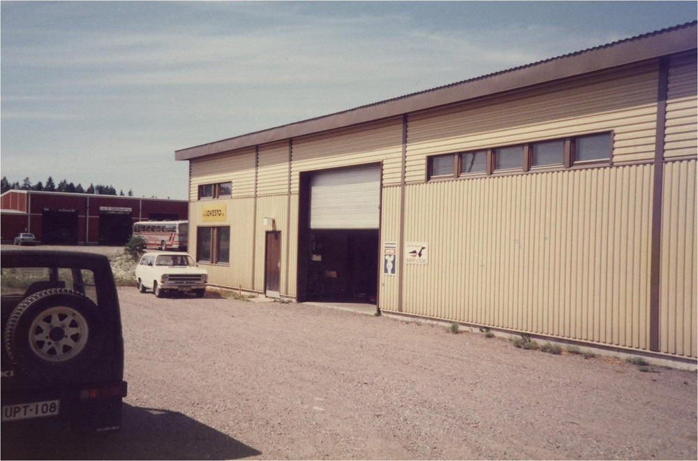

Lovesto
Vuonna 1970 Georg Nybondas ja Rainer Engström ostivat F:ma Resto Reino Henrikssonilta. Henriksson oli pyörittänyt ruosteenestoyristystä pari vuotta ja oli valmis vaihtmaan alaa.
Nybondas ja Engström olivat työskennelleet maatalouskoneiden ja pienkoneiden parissa Labor nimisessä yrityksessä. Tämän takia ruohonleikkurit, moottorisahat ja perämoottorit olivat luonnollinen lisätyöllistäjä ruosteeneston lisäksi. Nykyään moottorisahat ovat pudonneet pois kokonaan ja perämoottorit ovat suurin työllistäjä.

Vuonna 1978 yhtiömuoto ja nimi muutettiin Ky Lovesto Kb :ksi.
Uusi halli rakennettiin Insinöörintielle ja kun Rainer Engström kuoli 1989 hänen poika Tom Engström jatkoi osakkaana yrityksessä. Toiminta jatkui ja helmikuussa 2013 Nybondas päätti jäädä eläkkeelle ja 04.04.2013 Lovestosta tuli osakeyhtiö ja nimi kirjoitetaan Oy Lovesto Ab.